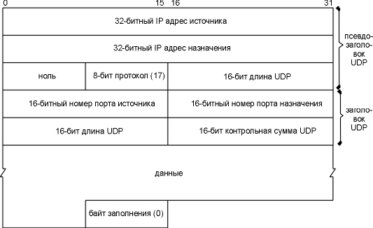

Глава 11 UDP: User Datagram Protocol
UDP простой, ориентированный на передачу датаграмм, протокол транспортного уровня: за один раз процесс выдает одну UDP датаграмму, в результате чего передается одна IP датаграмма. Это отличается от поток-ориентированных протоколов, таких как TCP, где количество данных, которое выдается приложением, практически не имеет отношения к количеству отправленных IP датаграмм.
На рисунке 11.1 показана инкапсуляция UDP датаграммы в IP датаграмму.

Рисунок 11.1 UDP инкапсуляция.
Официальная спецификация UDP приведена в RFC 768 [Postel 1980].
UDP является ненадежным протоколом: он отправляет датаграммы, которые приложение пишет в IP уровень, однако не существует гарантии того, что они достигнут конечного пункта назначения. С точки зрения надежности может возникнуть предположение, что стоит избегать использовать UDP и всегда пользоваться надежными протоколами, такими как TCP. После того как TCP будет описан в главе 17, мы вернемся к этой теме и посмотрим, какие типы приложений могут использовать UDP.
Приложениям нет необходимости беспокоиться о размере получившейся в результате IP датаграммы. Если она по размеру больше, чем MTU для данной сети (см. главу 2, раздел "MTU"), IP датаграмма будет фрагментирована. Это применимо к каждой сети, через которую пройдет датаграмма по пути от источника до пункта назначения, кроме первой сети, к которой подключен посылающий хост. (Мы определили понятие транспортного MTU в разделе "Транспортный MTU" главы 2.) Более подробно IP фрагментация будет рассмотрена в разделе "Фрагментация IP" этой главы.
На рисунке 11.2 показаны поля, присутствующие в UDP заголовке.

Рисунок 11.2 UDP заголовок.
Номера портов (port numbers) указывают на отправляющий и принимающий процессы. На рисунке 1.8 показано, что TCP и UDP используют номер порта назначения для демультиплексирования данных, поступающих от IP. Так как IP осуществляет демультиплексирование входящих IP датаграмм для TCP и UDP (с использованием значения протокола в IP заголовке), TCP просматривает номера портов TCP, а UDP - номера портов UDP. Номера портов TCP независимы от номеров портов UDP.
Несмотря на подобную независимость, если зарезервированный сервис предоставляется обоими TCP и UDP, обычно выбирается один и тот же номер порта для обоих транспортных уровней. Это сделано для удобства, а не по требованию протоколов.
Поле длины UDP содержит длину в байтах UDP заголовка и UDP данных. Минимальное значение для этого поля составляет 8 байт. (Не произойдет ничего страшного, если будет отправлена UDP датаграмма с нулевой длиной данных.) Параметр UDP длины - избыточный. IP датаграмма содержит свою полную длину в байтах, поэтому длина UDP датаграммы это полная длина минус длина IP заголовка (которая указана в поле длины заголовка на рисунке 3.1).
Контрольная сумма UDP охватывает UDP заголовок и UDP данные. Вспомним, что контрольная сумма в IP заголовке охватывает только IP заголовок - она не охватывает данные, находящиеся в IP датаграмме. И UDP, и TCP содержат контрольные суммы в своих заголовках, которые охватывают как заголовок, так и данные. Для UDP контрольная сумма необязательна, но для TCP она обязательна.
Контрольная сумма UDP рассчитывается точно так же, как (глава 3, раздел "IP заголовок") контрольная сумма IP заголовка (сумма 16-битных слов с переполнением), хотя существуют и отличия. Во-первых, UDP датаграмма может состоять из нечетного количества байт, тогда как при расчете контрольной суммы складываются 16-битные слова. При этом в конец датаграммы добавляются нулевые байты заполнения, если это необходимо для расчета контрольной суммы. (Байты заполнения не передаются.)
В UDP и TCP существуют 12-байтовые псевдозаголовки (в UDP датаграммах и TCP сегментах) только для расчета контрольной суммы. Псевдозаголовки содержат в себе определенные поля из IP заголовка. Все это сделано для двойной проверки того, что данные достигли того пункта назначения, которому предназначались (IP не принимает датаграммы, которые не адресованы для данного хоста, и не сможет передать UDP датаграммы, предназначенные для другого верхнего уровня). На рисунке 11.3 показан псевдозаголовок и UDP датаграмма.

Рисунок 11.3 Поля, используемые для расчета контрольной суммы UDP.
На этом рисунке мы специально показали датаграмму с нечетной длиной, в этом случае требуется дополнительный байт для расчета контрольной суммы. Обратите внимание на то, что длина UDP датаграммы, при расчете контрольной суммы, появляется дважды.
Если рассчитанная контрольная сумма равна 0, она хранится как все единичные биты (65535), эти значения эквивалентны в арифметике с поразрядным дополнением (дополнение единицы) (ones-complement). Если переданная контрольная сумма равна 0, это означает, что отправитель не рассчитал контрольную сумму.
Если отправитель все же рассчитал контрольную сумму, а получатель определил наличие ошибки, UDP датаграмма молча уничтожается, сообщение об ошибке не генерируется. (То же самое происходит, если IP уровень обнаружил ошибку в контрольной сумме IP заголовка.)
Контрольная сумма UDP рассчитывается отправителем и проверяется получателем. Она позволяет определить любые изменения в UDP заголовке или данных, которые произошли на пути между отправителем и получателем.
Несмотря на то, что для контрольная сумма UDP - необязательный параметр, она должна рассчитываться всегда. В конце 1980-х годов некоторые производители компьютеров стали по умолчанию отключать расчет контрольной суммы UDP, чтобы увеличить скорость работы сетевой файловой системы (NFS - Network File System), которая использует UDP. Это может быть допустимым в одной локальной сети, где рассчитывается циклический избыточный код для фреймов на канальном уровне (фреймы Ethernet или Token ring), с помощью которого можно определить повреждение фрейма, когда датаграмма проходит через маршрутизаторы. Поверите Вы или нет, но существуют маршрутизаторы, у которых есть ошибки в программном или аппаратном обеспечении и которые изменяют биты в датаграммах, которые они маршрутизируют. Эти ошибки не могут быть выявлены в UDP датаграммах, если отключена опция контрольной суммы. Также необходимо отметить, что некоторые протоколы канального уровня (например, SLIP) не имеют каких-либо форм расчета контрольной суммы для данных в канале.
Требования к хостам Host Requirements RFC требуют, чтобы расчет контрольной суммы UDP был включен по умолчанию. Также они требуют, чтобы принятая контрольная сумма обязательно проверялась, если ее рассчитал отправитель (в том случае, если принятая контрольная сумма не нулевая). Некоторые реализации игнорируют это и проверяют принятую контрольную сумму в том случае, если включена опция расчета исходящей контрольной суммы.
Вывод команды tcpdump
Довольно сложно определить, включена ли опция расчета контрольной суммы UDP на конкретной системе. Обычно приложение не имеет доступа к полю контрольной суммы принятого UDP заголовка. Чтобы решить эту проблему, автор добавил еще одну опцию к программе tcpdump, после чего та стала выдавать полученные контрольные суммы UDP. Если полученное значение равно 0, это означает, что отправитель не рассчитал контрольную сумму.
На рисунке 11.4 показан вывод к трем системам и от тех же трех различных систем в нашей сети. Мы запустили программу sock (приложение С), послав единственную UDP датаграмму с 9 байтами данных на стандартный эхо сервер.
1 0.0
sun.1900
> gemini.echo: udp 9 (UDP cksum=6e90)
2 0.303755 ( 0.3038) gemini.echo > sun.1900: udp 9
(UDP cksum=0)
3 17.392480 (17.0887) sun.1904 > aix.echo: udp 9 (UDP
cksum=6e3b)
4 17.614371 ( 0.2219) aix.echo > sun.1904: udp 9 (UDP
cksum=6e3b)
5 32.092454 (14.4781) sun.1907 > solaris.echo: udp 9 (UDP
cksum=6e74)
6 32.314378 ( 0.2219) solaris.echo > sun.1907: udp 9 (UDP
cksum=6e74)
Рисунок 11.4 Вывод tcpdump, с помощью которого можно определить, включена ли опция контрольной суммы UDP на конкретном хосте.
Отсюда мы видим, что у двух из трех систем опция контрольной суммы UDP включена.
Также обратите внимание на то, что исходящая датаграмма имеет такую же контрольную сумму, как и входящая датаграмма (строки 3 и 4, 5 и 6). На рисунке 11.3, можно заметить, что два IP адреса поменяны местами, так же, как и два номера порта. Другие поля в псевдозаголовке и заголовке UDP остались те же, так как данные были отражены эхом. Это подтверждает, что контрольная сумма UDP (а в действительности, и все контрольные суммы в семействе протоколов TCP/IP) это простая 16-битовая сумма. С ее помощью невозможно определить ошибку, которая заключается в перемене мест двух 16-битных значений.
Автор также направил DNS запрос на каждый из восьми корневых серверов DNS, описанных в разделе "Основы DNS" главы 14. DNS использует UDP, и только на двух из восьми была включена опция расчета контрольной суммы UDP!
Немного статистики
[Mogul 1992] предоставляет некоторую статистическую информацию о появлении ошибок контрольных сумм на довольно загруженном NFS сервере, который работал в течение 40 дней. На рисунке 11.5 приведены статистические данные.
Уровень |
Количество ошибок в контрольных суммах |
Приблизительное количество пакетов |
| Ethernet | 446 |
170.000.000 |
| IP | 14 |
170.000.000 |
| UDP | 5 |
140.000.000 |
| TCP | 350 |
30.000.000 |
Рисунок 11.5 Статистика поврежденных пакетов, определенных с использованием контрольных сумм.
В последней колонке приведено приблизительное количество пакетов, так как и другие протоколы используют Ethernet и IP уровень. Например, не все Ethernet фреймы используются IP датаграммами, ARP также использует Ethernet. Не все IP датаграммы используются UDP или TCP, так как ICMP также использует IP.
Обратите внимание на то, что выявлено значительно больше ошибок контрольных сумм TCP, чем UDP. Это скорее всего вызвано тем, что с помощью TCP обычно устанавливаются "дальние" соединения (которые проходят через много маршрутизаторов, мостов и так далее), тогда как UDP траффик обычно локальный.
Поэтому ошибки, приведенные в нижней строке, не всегда имеют отношение к канальному уровню (Ethernet, Token ring). При передаче данных следует всегда включать опцию контрольную сумму в оконечных точках. Однако, если передаваемые данные представляют определенную ценность, не стоит полностью доверять контрольным суммам UDP или TCP, так как это простые контрольные суммы, и они не гарантируют, что защитят данные от всех возможных ошибок.
Мы воспользуемся программой sock, чтобы сгенерировать несколько UDP датаграмм, которые мы просмотрим с использованием tcpdump:
bsdi % sock -v -u -i -n4 svr4 discard
connected on 140.252.13.35.1108 to 140.252.13.34.9
bsdi % sock -v -u -i -n4 -w0 svr4 discard
connected on 140.252.13.35.1110 to 140.252.13.34.9
В первом случае запуска программы установлен отладочный режим (-v), при этом можно просмотреть номера динамически назначаемых портов, указан UDP (-u) вместо TCP по умолчанию и установлен режим источника, опция (-i) , это означает, что мы будем посылать данные, а не будем читать из стандартного ввода или писать в стандартный вывод. Опция -n4 сообщает о необходимости выдать 4 датаграммы (вместо того, чтобы выдавать по умолчанию 1024) на хост назначения svr4. Сервис discard описан в разделе "Стандартные простые сервисы" главы 1. Мы используем размер вывода по умолчанию в 1024 байта на одну запись.
Второй раз мы запустили программу, указав -w0, при этом будут выдаваться датаграммы нулевой длины. На рисунке 11.6 показан вывод команды tcpdump для двух примеров.
1 0.0
bsdi.1108
> svr4.discard: udp 1024
2 0.002424 ( 0.0024) bsdi.1108 > svr4.discard: udp
1024
3 0.006210 ( 0.0038) bsdi.1108 > svr4.discard: udp
1024
4 0.010276 ( 0.0041) bsdi.1108 > svr4.discard: udp
1024
5 41.720114 (41.7098) bsdi.1110 > svr4.discard: udp 0
6 41.721072 ( 0.0010) bsdi.1110 > svr4.discard: udp 0
7 41.722094 ( 0.0010) bsdi.1110 > svr4.discard: udp 0
8 41.723070 ( 0.0010) bsdi.1110 > svr4.discard: udp 0
Рисунок 11.6 Вывод команды tcpdump для случая, когда UDP датаграммы посылаются в одном направлении.
В выводе показаны четыре датаграммы размером 1024 байта, за которыми следуют четыре датаграммы нулевой длинны. Каждая датаграмма следует за предыдущей с интервалом в несколько миллисекунд. (Для того чтобы ввести вторую команду, потребовалась 41 секунда.)
До того как была отправлена первая датаграмма, соединения между отправителем и получателем не существовало. (В главе 17, где рассказывается о TCP, мы покажем, что перед тем как будет отправлен первый байт данных, должно быть установлено соединение.) Необходимо отметить, что получатель не выдает подтверждение, когда получает данные. Отправитель, в этом примере, не имеет представления о том, получены ли данные на удаленном конце.
И в завершение, обратите внимание, что номер порта источника UDP меняется каждый раз при запуске программы. Сначала порт был 1108, затем 1110. В разделе "Номера портов" главы 1 мы показали, что номера динамически назначаемых портов, используемых клиентами, обычно находятся в диапазоне от 1024 до 5000.
Как мы указали в разделе "MTU" главы 2, физический сетевой уровень обычно имеет ограничение максимального размера фрейма, который может быть передан. Когда IP уровень получает IP датаграмму, которую необходимо отправить, он определяет, на какой локальнй интерфейс отправляется датаграмма (или маршрутизируется), и запрашивает интерфейс, чтобы тот сообщил размер своего MTU. IP сравнивает MTU с размером датаграммы и, если необходимо, осуществляет фрагментацию. Фрагментация может быть осуществлена как на отправляющем хосте, так и на промежуточном маршрутизаторе.
Когда IP датаграмма фрагментирована, она не собирается вновь до тех пор, пока не достигнет конечного пункта назначения. (Для некоторых других сетевых протоколов процесс повторной сборки отличается от описанного выше, при этом повторная сборка осуществляется на маршрутизаторе следующей пересылки, а не в конечном пункте назначения.) На уровне IP сборка осуществляется в конечном пункте назначения. Это сделано для того, чтобы сделать фрагментацию и повторную сборку прозрачной для транспортных уровней (TCP и UDP), хотя это может вести к некоторой потере производительности. Существует вероятность, что фрагмент датаграммы будет снова фрагментирован (возможно даже несколько раз). Информации, которая содержится в IP заголовке вполне достаточно для фрагментации и повторной сборки.
Вернемся снова к IP заголовку (см. рисунок 3.1) и рассмотрим, какие поля используются в процессе фрагментации. Поле идентификации содержит значение уникальное для каждой отправленной IP датаграммы. Это значение копируется в каждый фрагмент конкретной датаграммы. В поле флагов один бит означает, что "дальше следуют еще фрагменты" (more fragments). Этот бит устанавливается в единицу для каждого фрагмента, кроме последнего. Поле смещения фрагмента (fragment offset) содержит смещение этого фрагмента от начала исходной датаграммы. Когда датаграмма фрагментируется, поле полной длины каждого фрагмента изменяется, так чтобы соответствовать размеру фрагмента.
И в заключение, один из битов в поле флагов называется "не фрагментировать" (don't fragment). Если этот бит установлен в единицу, IP не будет фрагментировать датаграмму. Вместо этого датаграмма уничтожается, а отправителю посылается ICMP ошибка "фрагментация необходима, однако установлен бит не фрагментировать" (fragmentation needed but don't fragment bit set). Мы рассмотрим эту ошибку более подробно в следующем разделе.
Когда IP датаграмма фрагментируется, каждый фрагмент становится пакетом, с собственным IP заголовком, и маршрутизируется независимо от других пакетов. Поэтому становится возможным, что датаграммы прибудет в конечный пункт назначения в другом порядке, нежели они были исходно отправлены и фрагментированы. Однако, в IP заголовке хранится достаточно информации для того, чтобы датаграмма была собрана корректно.
Несмотря на то, что процесс фрагментации IP выглядит довольно прозрачным, существует одна особенность, которая делает его не всегда желательным: если один фрагмент потерялся, датаграмма должна быть целиком повторно передана. Это объясняется тем, что IP не имеет тайм-аутов и не осуществляет повторной передачи - за это несут ответственность верхние уровни. (TCP осуществляет тайм-аут и повторную передачу, UDP - нет. Некоторые UDP приложения осуществляют тайм-аут и повторную передачу самостоятельно.) Когда потерялся фрагмент из TCP сегмента, TCP отработает тайм-аут и повторно передаст TCP сегмент целиком (IP датаграмма). Не существует способа повторно передать только один фрагмент датаграммы. И действительно, если фрагментация была осуществлена промежуточным маршрутизатором, а не отправляющей системой, отправляющая система не сможет знать как датаграмма была фрагментирована в процессе передачи. Именно по этой причине (всего одной) фрагментации стараются избежать. [Kent and Mogul 1987] приводят аргументы, которые доказывают необходимость избегать фрагментации.
С использованием UDP довольно легко добиться IP фрагментации. (Позже мы увидим, что TCP старается избежать фрагментации, и для приложения практически невозможно заставить TCP отправлять сегменты, которые нуждаются в фрагментации. То есть, другими словами, отправить сегмент такого размера, для которого потребуется фрагментация, практически невозможно.) Мы воспользуемся программой sock, чтобы увеличить размер датаграммы, с таким расчетом, чтобы была осуществлена фрагментация. Максимальный размер данных во фрейме Ethernet составляет 1500 байт (рисунок 2.1), при этом 1472 байта предназначены для пользовательских данных, 20 байт отводится под IP заголовок и 8 байт под UDP заголовок. Запустим программу sock с размером данных 1471, 1472, 1473 и 1474 байта. Мы ожидаем, что в двух последних случаях произойдет фрагментация:
bsdi % sock -u -i -n1 -w1471 svr4 discard
bsdi % sock -u -i -n1 -w1472 svr4 discard
bsdi % sock -u -i -n1 -w1473 svr4 discard
bsdi % sock -u -i -n1 -w1474 svr4 discard
На рисунке 11.7 показан соответствующий вывод команды tcpdump.
1 0.0
bsdi.1112
> svr4.discard: udp 1471
2 21.008303 (21.0083) bsdi.1114 >
svr4.discard: udp 1472
3 50.449704 (29.4414) bsdi.1116 >
svr4.discard: udp 1473 (frag 26304:1480@0+)
4 50.450040 ( 0.0003) bsdi > svr4:
(frag 26304:1@1480)
5 75.328650 (24.8786) bsdi.1118 >
svr4.discard: udp 1474 (frag 26313:1480@0+)
6 75.328982 ( 0.0003) bsdi > svr4:
(frag 26313:2@1480)
Рисунок 11.7 Наблюдения за фрагментацией UDP датаграмм.
Первые две UDP датаграммы (строки 1 и 2) помещаются в Ethernet фреймы и не фрагментируются. Однако, длина IP датаграммы, в которую необходимо записать 1473 байта данных, составляет 1501 байт, поэтому она должна быть фрагментирована (строка 3 и 4). Точно так же, длина датаграммы, в которую необходимо записать 1474 байта данных, будет составлять 1502 байта, и она также должна быть фрагментирована (строки 5 и 6).
Когда IP датаграмма фрагментирована, tcpdump выводит дополнительную информацию. Во-первых, выводится флаг frag 26304 (строки 3 и 4) и флаг frag 26313 (строки 5 и 6), который указывает на значение поля идентификации в IP заголовке.
Число 1480 в строке 3 (между двоеточием и символом @), это размер, за исключением IP заголовка. Первые фрагменты обеих датаграмм содержит 1480 байт данных: 8 байт UDP заголовока и 1472 байта пользовательских данных. (Если добавить 20 байт IP заголовка, получится точно размер пакета - 1500 байт.) Второй фрагмент первой датаграммы (строка 4) содержит 1 байт данных - оставшийся байт пользовательских данных. Второй фрагмент второй датаграммы (строка 6) содержит 2 оставшихся байта пользовательских данных.
При фрагментации требуется, чтобы порция данных генерируемых фрагментов (за исключением IP заголовока) была кратна 8 байтам для всех фрагментов за исключением последнего. В этом примере, число 1480 кратно восьми.
Число, следующее за символом @, это смещение данных во фрагменте от начала датаграммы. Первый фрагмент обеих датаграмм начинается с нуля (строки 3 и 5), а второй фрагмент обеих датаграмм начинается со смещения в 1480 байт (строки 4 и 6). Символ плюс, который следует за смещением и напечатан для первых фрагментов обеих датаграмм, означает, что в данной датаграмме присутствуют еще фрагменты. Знак плюс соответствует биту "дальше следуют еще фрагменты" (more fragments) в 3-битовом поле флагов IP заголовка. Назначение этого бита заключается в том, чтобы сообщить принимающему о том, что сборка всех фрагментов датаграммы полностью завершена.
И в завершение, обратите внимание на то, что в строках 4 и 6 (не первые фрагменты) не указан протокол (UDP), а также порты источника и назначения. Протокол должен быть напечатан, так как он находится в IP заголовке, который копируется в каждый фрагмент. А номера портов находятся в UDP заголовке, который присутствует только в первом фрагменте. На рисунке 11.8 показано, что произойдет с третьей датаграммой (которая содержит 1473 байта пользовательских данных). Здесь мы видим подтверждение того, что заголовок любого транспортного уровня присутствует только в первом фрагменте.
Хочется обратить внимание на терминологию: IP датаграмма (IP datagram) это блок, который передается от одного конца IP уровня к другому концу IP уровня (перед фрагментацией и после повторной сборки), тогда как пакет (packet) это блок данных, который передается между IP уровнем и канальным уровнем. Пакет может быть полной IP датаграммой или всего лишь фрагментом IP датаграммы.

Рисунок 11.8 Пример UDP фрагментации.
ICMP ошибки о недоступности (требуется фрагментация)
Необходимо обсудить еще одну ICMP ошибку о недоступности. Она генерируется, когда маршрутизатор принимает датаграмму, которую необходимо фрагментировать, однако в IP заголовке установлен флаг "не фрагментировать" (DF). Эта ошибка может быть использована программой, которой необходимо определить минимальный MTU в маршруте до пункта назначения - что называется механизмом определения транспортного MTU (path MTU discovery) (глава 2, раздел "Транспортный MTU").
На рисунке 11.9 показан формат ICMP ошибки о недоступности для данного случая. Он отличается от формата, приведенного на рисунке 6.10, потому что биты 16-31 во втором 32-битном слове могут содержать MTU следующей пересылки, вместо того чтобы быть установленными в 0.

Рисунок 11.9 ICMP ошибка о недоступности, когда необходима фрагментация, однако установлен бит "не фрагментировать".
Если маршрутизатор не поддерживает этот новый формат ICMP ошибки, MTU следующей пересылки устанавливается в 0.
Новые требования к маршрутизаторам Router Requirements RFC [Almquist 1993] указывают на то, что маршрутизатор должен генерировать эту новую форму, когда выдает ICMP сообщение о недоступности.
Пример
Проблема, которую мы обсудим, возникла при получении ICMP ошибки при попытке определить MTU SLIP канала с дозвоном между маршрутизатором netb и хостом sun. Мы знаем MTU этого канала от sun к netb, так как, во-первых, это указывается при конфигурации SLIP на хосте sun, во-вторых, мы видели MTU при запуске команды netstat в разделе "Команда netstat" главы 3. А сейчас мы хотим определить MTU в другом направлении. (В главе 25 рассказывается как определить MTU с использованием SNMP.) Для каналов точка-точка нет необходимости, чтобы MTU был одним и тем же в обоих направлениях.
Для определения использована следующая техника. Мы запустили ping с хоста solaris на хост bsdi, увеличивая размер пакета данных до тех пор, пока к пакетам не была применена фрагментация. Процесс показан на рисунке 11.10.

Рисунок 11.10 Системы, которые были использованы для определения MTU SLIP канала между netb и sun.
На хосте sun была запущена программа tcpdump, которая позволила посмотреть, как осуществляется фрагментация в SLIP канале. Фрагментация не появлялась и все было отлично до тех пор, пока размер данных в пакете ping не возрос от 500 байт до 600. Входящие эхо запросы были видны (как будто фрагментации не было), однако эхо отклики исчезли.
Чтобы лучше разобраться в происходящем, программа tcpdump также была запущена на bsdi, после чего стало видно, что отправляется и что принимается. На рисунке 11.11 показан вывод.
1 0.0
solaris
> bsdi: icmp: echo request (DF)
2 0.000000 (0.0000) bsdi > solaris: icmp:
echo reply (DF)
3 0.000000 (0.0000) sun > bsdi: icmp: solaris
unreachable -
need
to frag, mtu = 0 (DF)
4 0.738400 (0.7384) solaris > bsdi: icmp:
echo request (DF)
5 0.748800 (0.0104) bsdi > solaris: icmp:
echo reply (DF)
6 0.748800 (0.0000) sun > bsdi: icmp: solaris
unreachable -
need
to frag, mtu = 0 (DF)
Рисунок 11.11 Вывод программы tcpdump от ping на bsdi от solaris с IP датаграммой размером в 600 байт.
Во-первых, выражение (DF) в каждой строке означает, что в единицу установлен бит "не фрагментировать" в IP заголовке. Это означает, что Solaris 2.2 нормально устанавливает этот бит в единицу, что является частью механизма определения транспортного MTU.
Строка 1 указывает, что эхо запрос проходит через маршрутизатор netb к sun без фрагментации и с установленным битом DF, поэтому можно сделать вывод, что критичный размер MTU для SLIP хоста netb еще не достигнут.
Также, заметьте из строки номер 2, что DF флаг копируется в каждый эхо отклик. Как раз это и вызвало проблему. Эхо отклик того же размера, что и эхо запрос (чуть больше 600 байт), однако MTU исходящего SLIP интерфейса хоста sun равен 552. Эхо отклик должен быть фрагментирован, однако установлен флаг DF. Это заставляет sun генерировать ICMP ошибку о недоступности и отправлять ее к bsdi (где она уничтожается).
Именно поэтому мы не видели эхо отклики от solaris. Отклики не проходили через sun. На рисунке 11.12 показан путь прохождения пакетов.

Рисунок 11.12 Обмен пакетами для данного примера.
И в завершение, отметим, что выражение mtu=0 в строках 3 и 6 на рисунке 11.11 указывает на то, что sun не возвращает MTU для исходящего интерфейса в ICMP сообщении о недоступности, как показано на рисунке 11.9. (В разделе "Дополнительные примеры" главы 25 мы решим эту проблему с использованием SNMP и убедимся в том, что MTU SLIP интерфейса netb равен 1500.)
Определение транспортного MTU с использованием Traceroute
Так как большинство систем не поддерживают функцию определения транспортного MTU, мы доработаем программу traceroute (глава 8) так, чтобы она могла определять транспортный MTU. Мы отправим пакет с установленным битом "не фрагментировать" (don't fragment). Размер первого отправляемого пакета будет равен MTU исходящего интерфейса. Когда вернется ICMP ошибка "не могу фрагментировать" (can't fragment), мы уменьшим размер пакета. Если маршрутизатор, отправивший ICMP ошибку, поддерживает новую версию, которая включает MTU исходящего интерфейса в ICMP сообщение, мы используем полученное значение; иначе мы попробуем следующий меньший MTU. Как утверждает RFC 1191 [Mogul and Deering 1990], существует ограниченное количество значений MTU, наша программа имеет таблицу возможных значений и просто перейдет на следующее меньшее значение.
Попробуем подобный алгоритм с хоста sun на хост slip, зная, что SLIP канал имеет MTU равный 296:
sun % traceroute.pmtu slip
traceroute to slip (140.252.13.65), 30 hops max
outgoing MTU = 1500
1 bsdi (140.252.13.35) 15 ms 6 ms 6 ms
2 bsdi (140.252.13.35) 6 ms
fragmentation required and DF set, trying new MTU = 1492
fragmentation required and DF set, trying new MTU = 1006
fragmentation required and DF set, trying new MTU = 576
fragmentation required and DF set, trying new MTU = 552
fragmentation required and DF set, trying new MTU = 544
fragmentation required and DF set, trying new MTU = 512
fragmentation required and DF set, trying new MTU = 508
fragmentation required and DF set, trying new MTU = 296
2 slip (140.252.13.65) 377 ms 377 ms 377 ms
В этом примере маршрутизатор bsdi не вернул MTU исходящего интерфейса в ICMP сообщении, поэтому мы перейдем на следующее меньшее значение MTU. Первая строка вывода для TTL равного 2 сообщает имя хоста bsdi, однако это происходит из-за того, оно было возвращено маршрутизатором в ICMP ошибке. Последняя строка вывода для TTL равного 2 это как раз то, что мы ожидали.
Не составляет труда модифицировать ICMP код на bsdi, чтобы получить MTU исходящего интерфейса. И если мы сделаем это и вернемся к нашей программе, то получим следующий вывод:
sun % traceroute.pmtu slip
traceroute to slip (140.252.13.65), 30 hops max
outgoing MTU = 1500
1 bsdi (140.252.13.35) 53 ms 6 ms 6 ms
2 bsdi (140.252.13.35) 6 ms
fragmentation required and DF set, next hop MTU = 296
2 slip (140.252.13.65) 377 ms 378 ms 377 ms
Здесь нам нет смысла перебирать восемь различных значений MTU, маршрутизатор сообщил нужное значение.
Модифицированная версия traceroute была запущена несколько раз на различные хосты по всему миру. С ее помощью было достигнуто 15 стран (включая Антарктику), при этом были использованы различные трансатлантические и транстихоокеанские каналы. Однако, до того как сделать это, мы увеличили MTU SLIP канала с дозвоном между нашей подсетью и маршрутизатором netb (рисунок 11.12) до 1500, как в Ethernet.
Из 18 раз, когда была запущена программа, только в двух случаях траспортный MTU был меньше чем 1500. Один трансатлантический канал имел MTU равный 572 (странное значение, которое даже не приведено в списке в RFC 1191), и маршрутизатор не вернул ICMP ошибку в новом формате. Еще один канал между двумя маршрутизаторами в Японии не обрабатывал фреймы размером 1500 байт, также маршрутизатор не вернул ICMP ошибку в новом формате. После того как MTU было уменьшено до 1006, все заработало.
Вывод, который мы можем сделать из этих экспериментов, заключается в том, что большинство (но не все) глобальных сетей в настоящее время могут обрабатывать пакеты больше чем 512 байт. Использование характеристики поиска транспортного MTU позволяет приложениям работать значительно продуктивнее, пользуясь большими MTU.
Определение транспортного MTU при использовании UDP
Давайте рассмотрим взаимодействие между приложением, использующим UDP, и механизмом определения транспортного MTU. Нам необходимо посмотреть, что произойдет в том случае, когда приложение отправляет датаграмму, которая слишком велика для некоторого промежуточного канала.
Пример
Так как единственная система, которая поддерживает механизм определения транспортного MTU, это Solaris 2.x, мы используем ее как хост источник, чтобы отправить датаграмму размером 650 байт на slip. Так как хост slip находится позади SLIP канала с MTU равным 296, любая UDP датаграмма больше чем 268 байт (296 - 20 - 8) с установленным битом "не фрагментировать" должна вызвать ICMP ошибку "не могу фрагментировать" с маршрутизатора bsdi. На рисунке 11.13 показана топология и MTU каналов.

Рисунок 11.13 Системы, использованные для определения транспортного MTU с использованием UDP.
Следующая команда генерирует десять UDP датаграмм размером 650 байт с интервалом в 5 секунд:
solaris % sock -u -i -n10 -w650 -p5 slip discard
На рисунке 11.14 показан вывод команды tcpdump. Когда этот пример был запущен, маршрутизатор bsdi был сконфигурирован таким образом, чтобы не возвращать MTU следующей пересылки как часть ICMP ошибки "не могу фрагментировать".
Первая посланная датаграмма с установленным битом DF (строка 1) генерирует ожидаемую ошибку от маршрутизатора bsdi (строка 2). Что интересно, следующая датаграмма, также посланная с установленным битом DF (строка 3), генерирует ту же самую ICMP ошибку (строка 4). Мы ожидали, что эта датаграмма будет послана с выключенным битом DF.
В строке 5 IP наконец понял, что датаграммы в этот пункт назначения не должны посылаться с установленным битом DF, после чего стал фрагментировать датаграммы на хосте источнике. Это поведение отличается от того, что было показано в ранних примерах, где IP отправлял датаграммы, которые он получал от UDP, и при этом маршрутизаторам с более маленькими MTU (bsdi в данном случае) позволялось осуществлять фрагментацию.
1 0.0
solaris.38196
> slip.discard: udp 650 (DF)
2 0.004218 (0.0042) bsdi > solaris: icmp:
slip
unreachable - need to frag, mtu = 0 (DF)
3 4.980528 (4.9763) solaris.38196 > slip.discard: udp 650 (DF)
4 4.984503 (0.0040) bsdi > solaris: icmp:
slip
unreachable - need to frag, mtu = 0 (DF)
5 9.870407 (4.8859) solaris.38196 > slip.discard: udp 650 (frag
47942:552@0+)
6 9.960056 (0.0896) solaris > slip: (frag 47942:106@552)
7 14.940338 (4.9803) solaris.38196 > slip.discard: udp 650 (DF)
8 14.944466 (0.0041) bsdi > solaris: icmp:
slip
unreachable - need to frag, mtu = 0 (DF)
9 19.890015 (4.9455) solaris.38196 > slip.discard: udp 650 (frag
47944:552@0+)
10 19.950463 (0.0604) solaris > slip: (frag 47944:106@552)
11 24.870401 (4.9199) solaris.38196 > slip.discard: udp 650 (frag
47945:552@0+)
12 24.960038 (0.0896) solaris > slip: (frag 47945:106@552)
13 29.880182 (4.9201) solaris.38196 > slip.discard: udp 650 (frag
47946:552@0+)
14 29.940498 (0.0603) solaris > slip: (frag 47946:106@552)
15 34.860607 (4.9201) solaris.38196 > slip.discard: udp 650 (frag
47947:552@0+)
16 34.950051 (0.0894) solaris > slip: (frag 47947:106@552)
17 39.870216 (4.9202) solaris.38196 > slip.discard: udp 650 (frag
47948:552@0+)
18 39.930443 (0.0602) solaris > slip: (frag 47948:106@552)
19 44.940485 (5.0100) solaris.38196 > slip.discard: udp 650 (DF)
20 44.944432 (0.0039) bsdi > solaris: icmp:
slip
unreachable - need to frag, mtu = 0 (DF)
Рисунок 11.14 Определение транспортного MTU с использованием UDP.
Так как ICMP сообщение "не могу фрагментировать" не содержит MTU следующей пересылки, это означает, что IP решил что всех устраивает MTU равный 576. Первый фрагмент (строка 5) содержит 544 байта UDP данных, 8 байт UDP заголовка и 20 байт IP заголовка, полный размер IP датаграммы составляет 572 байта. Второй фрагмент (строка 6) содержит оставшиеся 106 байт UDP данных и 20-байтный IP заголовок.
К сожалению, следующая датаграмма, строка 7, имеет установленный бит DF, поэтому она отбрасывается bsdi, после чего возвращается ICMP ошибка. Здесь произошло следующее: истек IP таймер, который сообщил IP о необходимости проверить, не увеличился ли транспортный MTU, путем повторной установки бита DF. Мы увидим, что это произойдет снова в строках 19 и 20. Сравнивая времена в строках 7 и 19, где DF бит устанавливается в единицу, мы видим, что проверка на увеличение транспортного MTU осуществляется каждые 30 секунд.
Этот 30-секундный таймер слишком мал. RFC 1191 рекомендует установить значение таймера в 10 минут. Величину таймера можно изменить с помощью параметра ip_ire_pathmtu_interval (приложение E, раздел "Solaris 2.2"). В Solaris 2.2 не существует способа выключить определение транспортного MTU для одного UDP приложения или для всех UDP приложений. Оно может быть включено или выключено только для всей системы в целом с помощью изменения параметра ip_path_mtu_discovery. Как мы видим из данного примера, включение характеристики определения транспортного MTU, когда UDP приложения отправляют датаграммы, которые, возможно, будут фрагментированы, приведет к тому, что датаграмма может быть отброшена.
Максимальный размер датаграммы, воспринимаемый IP уровнем на solaris (576 байт), неверен. На рисунке 11.13 мы видели, что реальный MTU составляет 296 байт. Это означает, что фрагменты, генерируемые solaris, снова фрагментируются на bsdi. На рисунке 11.15 показан вывод tcpdump, полученный на хосте назначения (slip) для первой прибывшей датаграммы (строки 5 и 6 на рисунке 11.14).
1 0.0
solaris.38196
> slip.discard: udp 650 (frag 47942:272@0+)
2 0.304513 (0.3045) solaris > slip: (frag 47942:272@272+)
3 0.334651 (0.0301) solaris > slip: (frag 47942:8@544+)
4 0.466642 (0.1320) solaris > slip: (frag 47942:106@552)
Рисунок 11.15 Первая датаграмма, прибывшая на хост slip от solaris.
В этом примере хост solaris не должен фрагментировать исходящие датаграммы, однако должен выключить бит DF и позволить маршрутизатору с меньшим MTU осуществить фрагментацию.
Сейчас мы запустим тот же самый пример, однако изменим поведение маршрутизатора bsdi так, чтобы тот возвращал MTU следующей пересылки в ICMP сообщении "не могу фрагментировать". На рисунке 11.16 показаны первые шесть строк вывода tcpdump.
1 0.0
solaris.37974
> slip.discard: udp 650 (DF)
2 0.004199 (0.0042) bsdi > solaris: icmp:
slip
unreachable - need to frag, mtu = 296 (DF)
3 4.950193 (4.9460) solaris.37974 > slip.discard: udp 650
(DF)
4 4.954325 (0.0041) bsdi > solaris: icmp:
slip
unreachable - need to frag, mtu = 296 (DF)
5 9.779855 (4.8255) solaris.37974 > slip.discard: udp 650
(frag 35278:272@0+)
6 9.930018 (0.1502) solaris > slip: (frag 35278:272@272+)
7 9.990170 (0.0602) solaris > slip: (frag 35278:114@544)
Рисунок 11.16 Определение транспортного MTU с использованием UDP.
И снова мы видим, что две первые датаграммы отправлены с установленным битом DF, на обе получены ICMP ошибки. Сейчас в ICMP ошибке указывается MTU следующей пересылки, который равен 296.
В строках 5, 6 и 7 мы видим, что хост источник осуществляет фрагментацию, как на рисунке 11.14. Если известен MTU следующей пересылки, генерируются только три фрагмента, по сравнению с четырьмя фрагментами, которые генерируются маршрутизатором bsdi на рисунке 11.15.
Взаимодействие между UDP и ARP
Используя UDP, мы можем рассмотреть очень интересное взаимодействие между UDP и типичной реализацией ARP.
Мы используем программу sock, чтобы сгенерировать одну UDP датаграмму с 8192 байтами данных. Мы ожидаем, что в этом случае будет сгенерировано шесть Ethernet фрагментов (см. упражнение 3 главы 11). Также, перед запуском программы, мы убедимся в том, что ARP кэш пуст, поэтому перед тем как будет отправлен первый фрагмент, должен произойти обмен ARP запросом и откликом.
bsdi % arp -a
проверяем,
что ARP кэш пуст
bsdi % sock -u -i -n1 -w8192 svr4 discard
Мы ожидаем, что первая датаграмма вызовет отправку ARP запроса. Следующие пять фрагментов, которые генерируются IP, ставят перед нами два вопроса, на которые мы можем ответить, только воспользовавшись tcpdump: будут ли готовы к отправке оставшиеся фрагменты, перед тем как будет получен ARP отклик, если так, что будет делать ARP с этими несколькими пакетами направляемыми на конкретный пункт назначения, пока ожидается ARP отклик? На рисунке 11.17 показан вывод программы tcpdump.
1 0.0
arp
who-has svr4 tell bsdi
2 0.001234 (0.0012) arp who-has svr4 tell bsdi
3 0.001941 (0.0007) arp who-has svr4 tell bsdi
4 0.002775 (0.0008) arp who-has svr4 tell bsdi
5 0.003495 (0.0007) arp who-has svr4 tell bsdi
6 0.004319 (0.0008) arp who-has svr4 tell bsdi
7 0.008772 (0.0045) arp reply svr4 is-at
0:0:c0:c2:9b:26
8 0.009911 (0.0011) arp reply svr4 is-at
0:0:c0:c2:9b:26
9 0.011127 (0.0012) bsdi > svr4: (frag
10863:800@7400)
10 0.011255 (0.0001) arp reply svr4 is-at
0:0:c0:c2:9b:26
11 0.012562 (0.0013) arp reply svr4 is-at
0:0:c0:c2:9b:26
12 0.013458 (0.0009) arp reply svr4 is-at
0:0:c0:c2:9b:26
13 0.014526 (0.0011) arp reply svr4 is-at
0:0:c0:c2:9b:26
14 0.015583 (0.0011) arp reply svr4 is-at
0:0:c0:c2:9b:26
Рисунок 11.17 Обмен пакетами при отправке по Ethernet UDP датаграммы размером 8192 байта.
Этот вывод достаточно неожидан. Во-первых, перед тем как получен первый ARP отклик, генерируются шесть ARP запросов. Как можно догадаться, IP быстро генерирует шесть фрагментов, и для каждого отправляется ARP запрос.
Затем, когда получен первый ARP отклик (строка 7), отправляется только последний фрагмент (строка 9)! Это означает, что первые пять фрагментов были отброшены. В действительности, это пример обычного функционирования ARP. Большинство реализаций держат только последний пакет, который должен быть отправлен на хост назначения, пока ожидается ARP отклик.
Требования к хостам Host Requirements RFC требуют от реализаций, чтобы они предотвращали лавинообразную рассылку ARP запросов (повторная отправка ARP запросов для одного и того же IP адреса с большой частотой). Рекомендуемая максимальная частота составляет один раз в секунду. Здесь мы видим шесть ARP запросов в течение 4,3 миллисекунды. Требования к хостам Host Requirements RFC требуют, чтобы ARP сохранил по крайней мере один пакет, и это должен быть самый последний пакет. Это как раз то, что мы видели здесь.
Следующая необъяснимая аномальность заключается в том, что svr4 отправил назад семь ARP откликов, а не шесть.
И последнее, про что хочется сказать, tcpdump работал еще 5 минут после того, как вернулся последний ARP отклик, ожидая увидеть, как svr4 пошлет назад ICMP ошибку "время истекло в течение повторной сборки" (time exceeded during reassembly). ICMP сообщение так и не появилось. (Мы показали формат этого сообщения на рисунке 8.2. Поле код, установленное в 1, указывает на то, что время истекло в течение повторной сборки датаграммы.)
IP уровень должен запустить таймер, когда появляется первый фрагмент датаграммы. Здесь "первый" означает первый из прибывших фрагментов для данной датаграммы, а не просто первый фрагмент (со смещением фрагмента равным 0). Обычное значение тайм-аута находится в диапазоне от 30 до 60 секунд. Если все фрагменты для этой датаграммы не прибыли за время до истечения таймера, все фрагменты отбрасываются. Если этого не сделать, фрагменты, которые уже никогда не прибудут (как мы видели в этом примере), могут вызвать переполнение приемного буфера.
Существуют две причины, по которым мы не увидели ICMP сообщение. Во-первых, большинство реализаций Berkeley никогда не генерируют эту ошибку! Эти реализации устанавливают таймер и отбрасывают все фрагменты, когда таймер истечет, однако ICMP ошибка не генерируется. Во-вторых, первый фрагмент - фрагмент со смещением равным 0, содержащий UDP заголовок, не был принят. (Это был первый из пяти пакетов, отброшенных ARP.) Реализация не требует генерировать ICMP ошибку, если первый фрагмент не был принят. Причина заключается в том, что приемник ICMP ошибки не может сказать, который пользовательский процесс отправил датаграмму, которая была отброшена, потому что недоступен заголовок транспортного уровня. А высший уровень (либо TCP приложение, либо UDP приложение) отработает тайм-аут и повторит передачу.
В этом разделе мы использовали IP фрагментацию, чтобы посмотреть, как осуществляется взаимодействие между UDP и ARP. Это взаимодействие можно увидеть, если отправитель быстро отправит несколько UDP датаграмм. Мы воспользовались фрагментацией, потому что пакеты быстро генерируются с помощью IP, что значительно быстрее, чем генерация нескольких пакетов пользовательским процессом.
Максимальный размер UDP датаграммы
Теоретически максимальный размер IP датаграммы может составлять 65535 байт, что ограничивается 16-битным полем полной длины в IP заголовке (см. рисунок 3.1). При длине IP заголовка равной 20 байтам и длине UDP заголовка равной 8 байтам в UDP датаграмме для пользовательских данных остается максимум 65507 байт. В большинстве реализаций, однако, используются датаграммы значительно меньшего размера.
Обычно играют роль два ограничения. Во-первых, программа приложение может быть ограничена программным интерфейсом. Сокеты API (глава 1, раздел "Интерфейсы прикладного программирования") предоставляют функцию, которая может быть вызвана приложением, чтобы установить размер буферов ввода и вывода. Для UDP сокета этот размер напрямую связан с максимальным размером UDP датаграммы, которая может быть прочитана и записана UDP. В настоящее время большинство систем предоставляют по умолчанию максимальный размер UDP датаграммы, которая может быть прочитана или записана, равный 8192 байтам. (Эта значение установлено в 8192, потому что именно столько по умолчанию читается и записывается системой NFS.)
Следующее ограничение определяется реализацией ядра TCP/IP. Могут существовать характеристики реализации (или ошибки), которые ограничивают размер UDP датаграммы значением меньшим, чем 65535 байт.
Автор экспериментировал с различными размерами UDP датаграмм, используя программу sock. С использованием loopback интерфейса под SunOS 4.1.3, максимальный размер UDP датаграммы был 32767 байт. Использовать большее значение не удавалось. При передаче по Ethernet от BSD/386 к SunOS 4.1.3, максимальный размер IP датаграммы, которую мог принять Sun, составлял 32786 (при этом пользовательских данных было 32758 байт). С использованием loopback интерфейса в Solaris 2.2 максимальный размер IP датаграммы, которая могла быть отправлена и принята, составлял 65535 байт. При передаче от Solaris 2.2 к AIX 3.2.2 удалось передать IP датаграмму максимального размера в 65535 байт.
В разделе "IP заголовок" главы 3 мы упомянули, что хосту необходимо получать IP датаграммы размером по меньшей мере 576 байт. Большинство приложений UDP разработаны таким образом, чтобы ограничивать свои приложения в размере 512 байт данных или меньше, чтобы уложиться в это ограничение. В разделе "RIP: протокол обмена информацией о маршрутизации" главы 10, например, мы видели, что RIP всегда посылает в датаграмме меньше чем 512 байт. Это же самое ограничение мы найдем и в других UDP приложениях: DNS (глава 14), TFTP (глава 15), BOOTP (глава 16) и SNMP (глава 25).
Из того что IP может отправлять и принимать датаграммы определенного размера, не следует, что принимающее приложение готово прочитать датаграммы этого размера. Программный интерфейс UDP позволяет приложениям указывать максимальное количество байт, которые будут обработаны за один раз. Что произойдет, если принятая датаграмма по размеру больше, чем датаграмма, которую готово принять приложение?
К сожалению, ответ зависит от программного интерфейса и реализации.
Традиционные версии Berkeley сокет API обрезают датаграммы, отбрасывая любые непоместившиеся данные. Будет ли приложение поставлено в известность, зависит от версии. (4.3 BSD Reno и более поздние версии могут уведомить приложение о том, что датаграмма была обрезана.) API сокеты под SVR4 (включая Solaris 2.x) не обрезают датаграммы. Любые непоместившиеся данные последовательно считываются. Приложение не уведомляется о нескольких циклах считывания и ему будет передана одна UDP датаграмма. TLI API не отбрасывают данные. Вместо этого возвращается флаг, указывающий на то, что данных больше, чем можно считать за один раз, поэтому приложение начинает последовательно считывать оставшуюся датаграмму.
Когда мы будем обсуждать TCP, то увидим, что этот протокол предоставляет последовательные потоки байт, направляемые в приложение, без каких-либо ограничений. TCP передает в приложение данные любого размера, которые требуются для приложения - причем данные на этом интерфейсе никогда не теряются.
ICMP ошибка подавления источника
Воспользовавшись UDP, можно сгенерировать ICMP ошибку "подавление источника" (source quench). Эта ошибка может быть сгенерирована системой (маршрутизатором или хостом), когда она принимает датаграммы быстрее, чем эти датаграммы могут быть обработаны. Обратите внимание на выражение "могут быть". Система не требует послать подавление источника, даже если буферы переполнены и датаграммы отбрасываются.
На рисунке 11.18 показан формат ICMP ошибки подавления источника. Мы имеем идеальную возможность сгенерировать подобную ошибку в нашей тестовой сети. Мы можем посылать датаграммы с bsdi на маршрутизатор sun по Ethernet, причем эти датаграммы должны быть смаршрутизированы через SLIP канал. Так как SLIP канал примерно в тысячу раз медленнее чем Ethernet, мы легко можем переполнить буфер. Следующая команда посылает 100 датаграмм размером 1024 байта с хоста bsdi через маршрутизатор sun на solaris. Мы отправляем датаграммы на стандартный discard сервис, где они будут игнорированы:
bsdi % sock -u -i -w1024 -n100 solaris discard

Рисунок 11.18 ICMP ошибка подавления источника.
На рисунке 11.19 показан вывод команды tcpdump, соответствующий этой команде.
1 0.0
bsdi.1403 >
solaris.discard: udp 1024
26
строк не показано
27 0.10 (0.00) bsdi.1403 > solaris.discard: udp 1024
28 0.11 (0.01) sun > bsdi: icmp: source quench
29 0.11 (0.00) bsdi.1403 > solaris.discard: udp 1024
30 0.11 (0.00) sun > bsdi: icmp: source quench
142
строки не показано
173 0.71 (0.06) bsdi.1403 > solaris.discard: udp 1024
174 0.71 (0.00) sun > bsdi: icmp: source quench
Рисунок 11.19 ICMP подавление источника от маршрутизатора sun.
Из этого вывода мы удалили множество строк. Первые 26 датаграмм приняты без ошибок: мы показали вывод только для первой. Начиная с 27-й датаграммы, каждый раз, когда отправляется датаграмма, мы получаем ошибку подавление источника. Всего было 26+(74х2)=174 строк вывода.
Из нашего расчета пропускной способности последовательной линии, приведенного в разделе "Вычисление загруженности последовательной линии" главы 2, видно, что на передачу датаграммы размером 1024 байта со скоростью 9600 бит/сек потребуется больше одной секунды. (В нашем примере для этого потребуется больше времени, так как датаграмма размером 20+8+1024 байт будет фрагментирована, потому что MTU SLIP канала от sun к netb составляет 552 байта.) Однако, из показателей времени, приведенных на рисунке 11.19, мы видим, что маршрутизатор sun получил все 100 датаграмм за время меньше чем одна секунда, перед тем как первая была отправлена в SLIP канал. При этом понятно, что мы использовали множество его буферов.
Несмотря на то, что RFC 1009 [Braden and Postel 1987] требует, чтобы маршрутизатор генерировал ошибки подавления источника, когда переполняются его буферы, новые требования к маршрутизаторам Router Requirements RFC [Almquist 1993] меняют это положение и говорят, что маршрутизатор не должен генерировать ошибки подавления источника.
Следующий момент, на который необходимо обратить внимание в примере, заключается в том, что программа sock никогда не получала уведомлений о том, что источник подавлен, или если и получала их, то игнорировала. Это говорит о том, что реализации BSD обычно игнорируют полученные сообщения о подавлении источника в случае использования протокола UDP. (В случае TCP, при получении уведомления передача данных по соединению, для которого сгенерировано подавление источника, замедляется. Мы это обсудим в разделе "ICMP ошибки" главы 21.) Проблема заключается в том, что процесс, который сгенерировал данные, которые, в свою очередь, вызвали подавление источника, может уже завершиться, когда будет принято сообщение о подавлении источника. И действительно, если мы используем программу time в Unix, чтобы оценить, как долго работает программа sock, то узнаем, что она проработала всего лишь около 0,5 секунды. Однако на рисунке 11.19 мы видели, что некоторые сообщения о подавлении источника были получены через 0,71 секунды после отправки первой датаграммы, то есть уже после того, как процесс прекратил работу. Что произойдет, если наша программа выдаст 100 датаграмм и завершится. Не все 100 датаграмм будут посланы - некоторые из них будут стоять в выходной очереди.
Этот пример доказывает, что UDP - ненадежный протокол и показывает важность контроля за потоком данных (flow control). Несмотря на то, что программа sock успешно выдала в сеть 100 датаграмм, только 26 достигли пункта назначения. Остальные 74 скорее всего были отброшены промежуточным маршрутизатором. Если приложение не поддерживает какую-либо форму уведомлений, отправитель не знает, принял ли получатель данные.
Существует несколько особенностей использования UDP, которые отражаются на разработке и реализации сервера. Разработка и реализация клиентов обычно легче, чем реализация серверов. Именно поэтому здесь мы обсудим разработку сервера, а не разработку клиента. Серверы обычно взаимодействуют с операционной системой, и большинство серверов требуют, чтобы существовал какой-либо способ, позволяющий обработать запросы от нескольких клиентов одновременно.
Обычно когда клиент стартует, он сразу же устанавливает соединение с одним сервером. Сервера, с другой стороны, стартуют и затем "засыпают", ожидая прибытия запроса от клиента. В случае UDP, сервер "просыпается", когда прибывает датаграмма от клиента, эта датаграмма может содержать запрос в какой-либо форме.
Мы не будем рассматривать аспекты программирования клиентов и серверов ([Stevens 1990] описывает все более подробно), однако рассмотрим характеристики протокола UDP, которые оказывают влияние на разработку и реализацию сервера, использующего UDP. (Мы обсудим подробности TCP сервера в разделе "Реализация TCP сервера" главы 18.) Некоторые характеристики мы обсудим в зависимости от реализаций UDP, которые будут использоваться, а также рассмотрим характеристики, которые являются общими для большинства реализаций.
IP адрес клиента и номер порта
От клиента прибывает UDP датаграмма. IP заголовок содержит IP адреса источника и назначения, а UDP заголовок содержит номера портов UDP источника и назначения. Когда приложение получает UDP датаграмму, операционная система должна сообщить ему, кто послал сообщение - IP адрес источника и номер порта.
Эта характеристика позволяет одному UDP серверу обрабатывать несколько клиентов. Каждый отклик отправляется тому клиенту, который послал запрос.
Некоторым приложениям необходимо знать, кому предназначена датаграмма, то есть IP адрес назначения. Например, требования к хостам Host Requirements RFC определяют, что TFTP сервер должен игнорировать принятые датаграммы, которые рассылаются на широковещательный адрес. (Мы опишем широковещательную адресацию в главе 12, а TFTP в главе 15.)
Это означает, что операционная система должна передать IP адрес назначения из принятой UDP датаграммы в приложение. К сожалению, не все реализации предоставляют эту возможность.
Сокеты API предоставляют эту возможность с использованием опции IP_RECVDSTADDR. Из систем, которые описываются в тексте, только BSD/386, 4.4BSD и AIX 3.2.2 поддерживают эту опцию. SVR4, SunOS 4.x и Solaris 2.x не поддерживают.
В разделе "Модель клиент-сервер" главы 1 мы говорили, что большинство UDP серверов могут обслуживать все запросы к клиентам с использованием одного UDP порта (заранее известные порты серверов).
Обычно размер входной очереди, связанный с каждым UDP портом, который используется приложением, ограничен. Это означает, что запросы, которые прибывают в одно и то же время от различных клиентов, автоматически ставятся в очередь UDP. Принятые UDP датаграммы передаются приложению (когда оно требует следующую датаграмму) в том порядке, в каком они были приняты.
Однако существует вероятность, в случае если очередь переполнена, что модуль UDP в ядре отбросит входящие датаграммы. Мы можем пронаблюдать это с помощью следующего эксперимента. Стартуем нашу программу sock на хосте bsdi, запустив таким образом UDP сервер:
bsdi % sock -s -u -v -E -R256 -r256 -P30 6666
from 140.252.13.33, to 140.252.13.63: 1111111111
от sun на
широковещательный адрес
from 140.252.13.34, to 140.252.13.35: 4444444444444 от
svr4 на персональный адрес
Мы использовали следующие флаги : -s, запускает программу в роли сервера, -u для UDP, -v, печатает IP адрес клиента, и -E печатает IP адрес назначения (в данном случае система это позволяет). В дополнение, мы установили приемный буфер UDP для этого порта в 256 байт (-R), вместе с размером, который может быть прочитан каждым приложением (-r). Флаг -P30 сообщает о необходимости подождать 30 секунд после очистки UDP порта, перед считыванием первой датаграммы. Это дает нам время стартовать клиентов на двух других хостах, послать некоторые датаграммы и посмотреть, как работает очередь приема.
После того как сервер стартован и прошла 30-секундная пауза, мы стартуем одного клиента на хосте sun и посылаем три датаграммы:
sun % sock -u -v 140.252.13.63 6666
на
широковещательный адрес Ethernet
connected on 140.252.13.33.1252 to 140.252.13.63.6666
1111111111
11
байт данных (с символом новой строки)
222222222
10
байт данных (с символом новой строки)
33333333333
12
байт данных (с символом новой строки)
Адрес назначения это широковещательный адрес (140.252.13.63). Затем мы стартовали еще одного клиента на хосте svr4 и послали еще три датаграммы:
svr4 % sock -u -v bsdi 6666
connected on 0.0.0.0.1042 to 140.252.13.35.6666
4444444444444
14
байт данных (с символом новой строки)
555555555555555
16
байт данных (с символом новой строки)
66666666
9
байт данных (с символом новой строки)
Первое, на что необходимо обратить внимание в интерактивном выводе, показанном ранее на bsdi, что только две датаграммы были приняты приложением: первая от sun, состоящая из всех единиц, и первая от svr4, состоящая из всех четверок. Остальные четыре датаграммы были отброшены.
Вывод команды tcpdump на рисунке 11.20 показывает, что все шесть датаграмм были доставлены к хосту назначения. Датаграммы прибыли от двух клиентов в обратном порядке: первая от sun, затем от svr4 и так далее. Также мы можем заметить, что все шесть были доставлены примерно за 12 секунд, в течение 30-секундного периода пока сервер "спал".
1 0.0
sun.1252
> 140.252.13.63.6666: udp 11
2 2.499184 (2.4992) svr4.1042
> bsdi.6666: udp 14
3 4.959166 (2.4600) sun.1252
> 140.252.13.63.6666: udp 10
4 7.607149 (2.6480) svr4.1042
> bsdi.6666: udp 16
5 10.079059 (2.4719) sun.1252 >
140.252.13.63.6666: udp 12
6 12.415943 (2.3369) svr4.1042 >
bsdi.6666: udp 9
Рисунок 11.20 Вывод tcpdump для UDP датаграмм, посланных двумя клиентами.
Также необходимо отметить, что c опцией -E сервер может узнать IP адрес назначения каждой датаграммы. Сервер может выбирать, что сделать с первой принятой датаграммой, которая была отправлена на широковещательный адрес.
В этом примере необходимо обратить внимание еще на некоторые особенности. Во-первых, приложение не сообщило, когда была переполнена входная очередь. Лишние датаграммы UDP просто отбросил. Также в выводе tcpdump мы видим, что ничего не было отправлено клиенту обратно, чтобы сообщить ему о том, что датаграммы были отброшены. Не было послано ничего похожего на ICMP сообщение подавления источника, абсолютно ничего. И в заключение, хочется отметить, что входная очередь UDP функционирует по принципу FIFO (первый вошел, первый вышел), тогда как, что мы видели в разделе "Взаимодействие между UDP и ARP" этой главы, входная очередь ARP - LIFO (последний зашел, первый вышел).
Ограничение локального IP адреса
Большинство UDP серверов используют символы подстановки для своих IP адресов, когда создают конечные точки UDP. Это означает, что входящая UDP датаграмма, направляющаяся на порт сервера, будет принята любым локальным интерфейсом. Например, мы можем стартовать UDP сервер на порте 7777:
sun % sock -u -s 7777
Затем мы воспользуемся командой netstat, чтобы посмотреть состояние этой конечной точки:
sun % netstat -a -n -f inet
Active Internet connections (including servers)
Proto Recv-Q Send-Q Local Address
Foreign Address
(state)
udp 0 0
*.7777
*.*
В этом выводе мы удалили много строк и оставили только те, которые нам интересны. Флаг -a сообщает о всех конечных точках сети. Флаг -n печатает IP адреса в десятичном представлении, вместо того чтобы использовать DNS и конвертировать адреса в имена, а также печатает номера портов вместо имен сервисов. Опция -f inet сообщает только о точках TCP и UDP.
Локальный адрес напечатан как *.7777, где звездочка означает, что в качестве локального IP адреса может быть подставлен любой адрес.
Когда сервер создает свою конечную точку, он может указать один из локальных IP адресов хоста, включая один из его широковещательных адресов в качестве локального IP адреса конечной точки. При этом входящая UDP датаграмма будет передана на конечную точку только в том случае, если IP адрес назначения совпадет с указанным локальным адресом. С помощью программы sock можно указать IP адрес перед номером порта, и этот IP адрес становится локальным IP адресом для конечной точки. Например,
sun % sock -u -s 140.252.1.29 7777
из датаграмм, прибывающих на SLIP интерфейс, выбирает датаграммы с адресом 140.252.1.29. Вывод команды netstat будет выглядеть следующим образом:
Proto Recv-Q Send-Q Local Address
Foreign Address
(state)
udp 0 0
140.252.1.29.7777 *.*
Если мы постараемся послать на этот сервер датаграмму с хоста bsdi, адрес которого 140.252.13.35, по Ethernet, вернется ICMP ошибка о недоступности порта. Сервер никогда не увидит эту датаграмму. На рисунке 11.21 это показано более подробно.
1 0.0
bsdi.1723
> sun.7777: udp 13
2 0.000822 (0.0008) sun > bsdi: icmp: sun udp port
7777 unreachable
Рисунок 11.21 Отказ обработки UDP датаграммы, вызванный несовпадением локального адреса сервера.
Существует возможность запустить другие сервера для этого же порта, каждый с собственным локальным IP адресом. Однако, приложение должно разрешить системе повторно использовать тот же самый номер порта.
Должна быть указана опция сокета в API SO_REUSEADDR. Это делается нашей программой sock с помощью опции -A.
На хосте sun мы можем стартовать пять различных серверов на одном и том же UDP порте (8888):
sun % sock -u -s 140.252.1.29 8888
для
канала SLIP
sun % sock -u -s -A 140.252.13.33 8888
для Ethernet
sun % sock -u -s -A 127.0.0.1 8888
для
loopback интерфейса
sun % sock -u -s -A 140.252.13.63 8888
для
широковещательных запросов Ethernet
sun % sock -u -s -A 8888
для
всего остального (метасимволы в IP адресе)
Ожидалось, что первый из серверов будет запущен с флагом -A, который сообщает системе о том, что можно повторно использовать тот же самый номер порта. Вывод команды netstat показывает следующие пять серверов:
Proto Recv-Q Send-Q Local Address
Foreign Address
(state)
udp 0 0
*.8888
*.*
udp 0 0
140.252.13.63.8888 *.*
udp 0 0
127.0.0.1 8888 *.*
udp 0 0
140.252.13.33 8888 *.*
udp 0 0
140.252.1.29 8888 *.*
В этом сценарии только датаграммы, направляющиеся на адрес 140.252.1.255, будут попадать на сервер с символами подстановки, используемыми в качестве локального IP адреса, потому что другие четыре сервера охватывают все возможные адреса.
При использовании подстановки IP адресов используется система приоритетов. Конечная точка с указанным IP адресом, который совпадает с IP адресом назначения, всегда будет выбрана раньше, чем адрес с символами подстановки. Конечная точка с символами подстановки используется только в том случае, когда не найдено совпадение с указанным адресом.
Ограничение внешних IP адресов
Во всех выводах команды netstat, которую мы показывали ранее, удаленные IP адреса и удаленные номера портов показаны как *.*. Это означает, что конечная точка воспримет входящие UDP датаграммы с любого IP адреса и любого номера порта. В большинстве реализаций конечным точкам UDP позволяется ограничивать удаленные адреса.
Другими словами, конечная точка может воспринимать только UDP датаграммы от указанного IP адреса и номера порта. Наша программа sock использует опцию -f, чтобы указать удаленный IP адрес и номер порта:
sun % sock -u -s -f 140.252.13.35.4444 5555
При этом удаленный IP адрес устанавливается в 140.252.13.35 (наш хост bsdi), а удаленный номер порта в 4444. Заранее-известный порт сервера 5555. Если мы запустим netstat, то увидим, что локальный IP адрес также установлен, даже если мы не указывали его непосредственно:
Proto Recv-Q Send-Q Local Address
Foreign Address
(state)
udp 0 0
140.252.13.33.5555 140.252.13.35.4444
Это побочный эффект указания удаленного IP адреса и удаленного номера порта в системах Berkeley: если локальный IP адрес не был выбран при установке удаленного адреса, локальный адрес выбирается автоматически. В качестве локального IP адреса устанавливается IP адрес интерфейса, который выбирается с помощью IP маршрутизации для достижения указанного удаленного IP адреса. И действительно, в этом примере IP адрес sun для Ethernet, который подключен к удаленному адресу, это 140.252.13.33.
На рисунке 11.22 приведены три типа адресов и портов, которые UDP сервер может установить для самого себя.
Локальный адрес |
Удаленный адрес |
Описание |
localIP.lport |
foreignIP.fport |
ограничено одним клиентом |
localIP.lport |
*.* |
ограничено датаграммами, прибывающими с одного локального интерфейса: localIP |
*.lport |
*.* |
принимает все датаграммы, посланные на lport |
Рисунок 11.22 Указание локального и удаленного IP адресов и номера порта для UDP сервера.
Во всех случаях lport это заранее-известный порт сервера, а localIP должен быть IP адресом локального интерфейса. Порядок, в котором расположены три строки на рисунке 11.22, показывает тот порядок, в котором UDP модуль старается определить, на которую локальную конечную точку принята входящая датаграмма. Наиболее жесткая связь адреса с портом (первая строка) выбирается в первую очередь, а менее жесткая (последняя строка, где и IP адрес, и номер порта указаны в виде метасимволов) выбирается последней.
Несмотря на то, что это не описано в RFC, большинство реализаций позволяют только одному приложению в одно и то же время быть связанным с одним локальным адресом и номером UDP порта. Когда UDP датаграмма прибывает на хост назначения на свой IP адрес и номер порта, одна копия доставляется в единственную конечную точку. IP адрес конечной точки может быть представлен в виде символов подстановки, как было показано ранее.
Например, в SunOS 4.1.3 мы стартовали один сервер на порт 9999 с локальным IP адресом в виде символов подстановки:
sun % sock -u -s 9999
Если затем попробовать стартовать еще один сервер с тем же локальным адресом в виде символов подстановки и с тем же портом, это не сработает, даже если мы укажем опцию -A:
sun % sock -u -s 9999 так
получиться не должно
can't bind local address: Address already in use
sun % sock -u -s -A 9999 поэтому мы
указали флаг -A
can't bind local address: Address already in use
Для систем, которые поддерживают групповую адресацию (см. главу 12), все обстоит иначе. Несколько конечных точек могут использовать один и тот же локальный адрес и номер UDP порта, однако приложение должно сообщить API, что это допустимо (флаг -A использует опцию сокета SO_REUSEADDR).
4.4BSD, которая поддерживает групповую адресацию, требует, чтобы приложение установило другую опцию сокета (SO_REUSEPORT), чтобы позволить нескольким конечным точкам делить один и тот же порт. Более того, каждая конечная точка должна указать эту опцию, включая первую конечную точку, которая использует этот порт.
Когда UDP датаграмма прибывает на свой IP адрес назначения, который является широковещательным или групповым адресом, при этом с этим IP адресом и номером порта связано несколько конечных точек, копия входящей датаграммы направляется каждой конечной точке. (Локальный IP адрес конечной точки может быть указан в виде символов подстановки, при этом он совпадет с любым IP адресом назначения.) Однако, если у прибывшей IP датаграммы IP адрес назначения - персональный адрес, только одна копия датаграммы доставляется в одну конечную точку. Которая конечная точка получит датаграмму с персональным адресом, зависит от реализации.
UDP это простой протокол. Официальная спецификация RFC 768 [Postel 1980] состоит всего лишь из трех страниц. Сервисы, которые он предоставляет пользовательским процессам, находящиеся над и позади IP, это номера портов и необязательные контрольные суммы. Мы использовали UDP, чтобы просмотреть расчет контрольных сумм и посмотреть, как осуществляется фрагментация.
Затем мы рассмотрели ICMP ошибку о недоступности, которая является частью новой характеристики определения транспортного MTU (см. главу 2, раздел "Транспортный MTU"). Мы рассмотрели определение транспортного MTU с использованием Traceroute и UDP. Также рассмотрен процесс взаимодействия UDP и ARP.
Мы убедились, что ICMP ошибка подавления источника может быть послана системой, которая принимает IP датаграммы быстрее, чем может обработать. Существует возможность легко генерировать эти ICMP ошибки с использованием UDP.